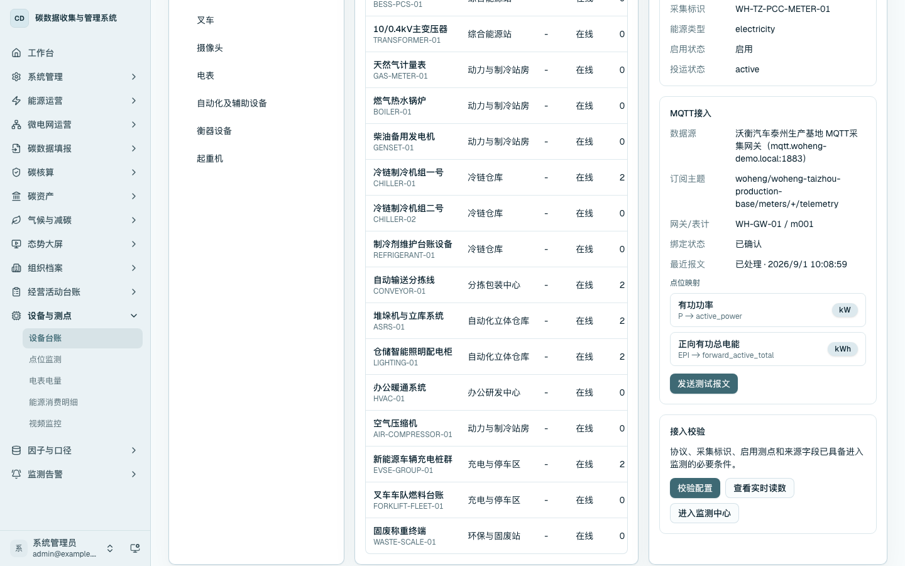

数据维护与 MQTT 电表接入
数据维护用于把仓储现场的区域、设备、测点和采集数据统一到平台主数据中。能源和碳数据进入平台主要有两类路径：一类来自 MQTT 电表、采集终端和测点映射；另一类来自经营活动台账和活动数据导入。电表接入完成后，实时读数可进入点位监测、电表电量、分区分项用能、告警和组织碳核算链路。
设备主数据
进入 /data/terminals，先在左侧区域树选择生产基地、能源站、仓库、充电区等区域，再在设备列表中选择电表、制冷机组、输送线、照明配电柜、充电桩等设备。设备主数据应维护设备编码、设备名称、所属区域、采集标识、采集协议、能源类型和投运状态。
对于 MQTT 电表，重点核对三层关系：区域承载设备，设备承载测点，测点通过来源字段映射到采集报文。设备配置完成后，可支撑电量趋势、分区分项能耗、监测告警和组织碳核算。

测点映射与接入校验
在设备台账中选择已配置 MQTT 的电表设备，切换到“接入”页签。页面展示采集协议、采集标识、数据源、订阅主题、网关/表计、绑定状态和点位映射。测点映射用于把报文中的 P、EPI 等来源字段转换为有功功率、正向有功总电能等业务点位。
管理员可在该页发送测试报文，验证 MQTT 报文能够被采集服务处理并写入点位读数。普通运维人员可查看接入配置和实时读数，确认该设备已具备进入监测链路的条件。

电表电量采集结果
进入 /data/meter，查看最新采集、采样数、电表数量和用电趋势。该页面用于说明 MQTT 采集数据已经进入业务系统，并能按时间和设备形成统计。

点位监测与来源追溯
进入 /data/point-monitoring，按设备、点位或来源编码搜索关键测点，查看总点位、有效点位、超时未更新点位、点位列表、趋势图、最近读数和来源追溯。演示时可选择正向有功总电能，说明读数已经从 MQTT 接入链路进入实时监测，并保留设备编码、网关、表计、订阅主题和映射版本等追溯信息。

区域主数据
进入 /data/monitor-area，查看区域树、基础信息和本区域设备。区域主数据用于支撑分区分项用能、区域碳排归集和告警定位。

数据维护检查项
- 区域树、设备列表和设备详情中的所属区域应保持一致。
- MQTT 电表应具备采集协议、采集标识、数据源、订阅主题、网关/表计和点位映射。
- 接入校验应显示配置问题为 0，或明确列出需补充的配置项。
- 电表电量页面应显示非空采样数据和用电趋势。
- 点位监测页面应显示最近读数、趋势图和来源追溯。